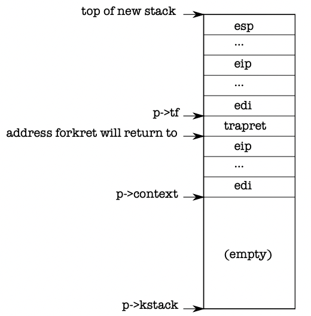

Code: creating the first process
Now we’ll look at how the kernel creates user-level processes and ensures that they are strongly isolated.
이제 커널이 사용자 수준 프로세스를 생성하고 이들이 강력하게 격리되도록 보장하는 방법을 살펴보겠습니다.
After main (1217) initializes several devices and subsystems, it creates the first process by calling userinit (2520). Userinit’s first action is to call allocproc. The job of allocproc (2473) is to allocate a slot (a struct proc) in the process table and to initialize the parts of the process’s state required for its kernel thread to execute. allocproc is called for each new process, while userinit is called only for the very first process. allocproc scans the proc table for a slot with state UNUSED (2480-2482). When it finds an unused slot, allocproc sets the state to EMBRYO to mark it as used and gives the process a unique pid (2469-2489). Next, it tries to allocate a kernel stack for the process’s kernel thread. If the memory allocation fails, allocproc changes the state back to UNUSED and returns zero to signal failure.
main 함수(1217)이 여러 장치와 서브시스템을 초기화한 후, 첫 번째 프로세스를 생성하기 위해 userinit 함수(2520)을 호출합니다. userinit 함수의 첫 번째 동작은 allocproc 함수를 호출하는 것입니다. allocproc 함수(2473)의 역할은 프로세스 테이블에서 슬롯(구조체 proc)을 할당하고, 해당 프로세스의 커널 스레드가 실행될 때 필요한 프로세스 상태 부분을 초기화하는 것입니다. allocproc 함수는 새로운 프로세스마다 호출되며, userinit 함수는 맨 처음 프로세스에 대해서만 호출됩니다. allocproc 함수는 상태가 UNUSED인 슬롯을 프로세스 테이블에서 찾기 위해 스캔합니다(2480-2482). 사용되지 않은 슬롯을 찾으면 allocproc 함수는 해당 슬롯의 상태를 EMBRYO로 설정하여 사용됨을 표시하고, 프로세스에 고유한 pid를 할당합니다(2469-2489). 그다음, 프로세스의 커널 스레드에 대한 커널 스택을 할당하려고 시도합니다. 메모리 할당에 실패하면 allocproc 함수는 상태를 다시 UNUSED로 변경하고 실패를 나타내기 위해 0을 반환합니다.

Now allocproc must set up the new process’s kernel stack. allocproc is written so that it can be used by fork as well as when creating the first process. allocproc sets up the new process with a specially prepared kernel stack and set of kernel registers that cause it to return to user space when it first runs. The layout of the prepared kernel stack will be as shown in Figure 1-4. allocproc does part of this work by setting up return program counter values that will cause the new process’s kernel thread to first execute in forkret and then in trapret (2507-2512). The kernel thread will start executing with register contents copied from p->context. Thus setting p->context->eip to forkret will cause the kernel thread to execute at the start of forkret (2853). This function will return to whatever address is at the bottom of the stack. The context switch code (3059) sets the stack pointer to point just beyond the end of p->context. allocproc places p->context on the stack, and puts a pointer to trapret just above it; that is where forkret will return. trapret restores user registers from values stored at the top of the kernel stack and jumps into the process (3324). This setup is the same for ordinary fork and for creating the first process, though in the latter case the process will start executing at user-space location zero rather than at a return from fork.
이제 allocproc 함수는 새로운 프로세스의 커널 스택을 설정해야 합니다. allocproc 함수는 첫 번째 프로세스를 생성할 때와 fork 함수를 사용할 때 모두 사용될 수 있도록 작성되었습니다. allocproc 함수는 새로운 프로세스를 특별히 준비된 커널 스택과 커널 레지스터 세트로 설정하며, 이로 인해 처음 실행될 때 사용자 공간으로 return하게 됩니다. 준비된 커널 스택의 레이아웃은 Figure 1-4에 나와 있는 대로입니다. allocproc 함수는 이 작업의 일부를 수행하기 위해 새 프로세스의 커널 스레드가 먼저 forkret에서 실행된 다음 trapret에서 실행되도록 반환 프로그램 카운터 값을 설정합니다(2507-2512). 커널 스레드는 p->context에서 복사된 레지스터 내용을 가지고 실행을 시작합니다. 따라서 p->context->eip를 forkret로 설정하면 커널 스레드가 forkret의 시작 부분에서 실행됩니다(2853). 이 함수는 스택의 맨 아래에 있는 주소로 반환할 것입니다. 컨텍스트 전환 코드(3059)는 스택 포인터를 p->context의 끝 바로 다음을 가리키도록 설정합니다. allocproc 함수는 p->context를 스택에 놓고 그 위에 trapret의 포인터를 놓습니다. 이곳이 forkret에서 반환될 위치입니다. trapret은 커널 스택의 맨 위에 저장된 값으로부터 사용자 레지스터를 복원하고 프로세스로 점프합니다(3324). 이 설정은 일반적인 fork와 첫 번째 프로세스 생성에 대해 동일하며, 후자의 경우 프로세스는 fork에서 반환하는 대신 사용자 공간 위치 0에서 실행을 시작합니다.
As we will see in Chapter 3, the way that control transfers from user software to the kernel is via an interrupt mechanism, which is used by system calls, interrupts, and exceptions. Whenever control transfers into the kernel while a process is running, the hardware and xv6 trap entry code save user registers on the process’s kernel stack. userinit writes values at the top of the new stack that look just like those that would be there if the process had entered the kernel via an interrupt (2533-2539), so that the ordinary code for returning from the kernel back to the process’s user code will work. These values are a struct trapframe which stores the user registers. Now the new process’s kernel stack is completely prepared as shown in Figure 1-4.
3장에서 볼 것처럼, 사용자 소프트웨어에서 커널로의 제어 이전은 시스템 호출, 인터럽트 및 예외에서 사용되는 인터럽트 메커니즘을 통해 이루어집니다. 프로세스가 실행 중일 때 커널로 제어가 전환될 때마다 하드웨어와 xv6 트랩 엔트리 코드는 사용자 레지스터를 프로세스의 커널 스택에 저장합니다. userinit 함수는 새 스택의 맨 위에 프로세스가 인터럽트를 통해 커널로 진입한 것처럼 보이는 값을 씁니다(2533-2539). 이렇게 함으로써 커널에서 프로세스의 사용자 코드로 돌아가는 일반 코드가 작동하게 됩니다. 이 값들은 사용자 레지스터를 저장하는 struct trapframe입니다. 이제 새로운 프로세스의 커널 스택이 Figure 1-4에 나와 있는 것과 같이 완전히 준비되었습니다.
The first process is going to execute a small program (initcode.S; (8400)). The process needs physical memory in which to store this program, the program needs to be copied to that memory, and the process needs a page table that maps user-space addresses to that memory.
첫 번째 프로세스는 작은 프로그램(initcode.S; (8400))을 실행할 것입니다. 이 프로세스는 이 프로그램을 저장할 물리적 메모리가 필요하며, 프로그램은 해당 메모리로 복사되어야 하며, 프로세스는 사용자 공간 주소를 해당 메모리에 매핑하는 페이지 테이블이 필요합니다.
userinit calls setupkvm (1818) to create a page table for the process with (at first) mappings only for memory that the kernel uses. We will study this function in detail in Chapter 2, but at a high level setupkvm and userinit create an address space as shown in Figure 1-2.
userinit 함수는 프로세스를 위한 페이지 테이블을 생성하기 위해 setupkvm 함수(1818)를 호출합니다. 이 페이지 테이블에는 초기에 커널이 사용하는 메모리만 매핑됩니다. 2장에서 이 함수를 자세히 공부할 것입니다만, 고수준에서 setupkvm과 userinit은 Figure 1-2에 나와 있는 것과 같은 주소 공간을 생성합니다.
The initial contents of the first process’s user-space memory are the compiled form of initcode.S; as part of the kernel build process, the linker embeds that binary in the kernel and defines two special symbols, _binary_initcode_start and _binary_initcode_size, indicating the location and size of the binary. Userinit copies that binary into the new process’s memory by calling inituvm, which allocates one page of physical memory, maps virtual address zero to that memory, and copies the binary to that page (1886).
첫 번째 프로세스의 사용자 공간 메모리의 초기 내용은 initcode.S의 컴파일된 형태입니다. 커널 빌드 과정 중에 링커는 그 이진 파일을 커널에 포함시키고, _binary_initcode_start와 _binary_initcode_size라는 두 개의 특별한 심볼을 정의합니다. 이 심볼들은 이진 파일의 위치와 크기를 나타냅니다. userinit 함수는 이 이진 파일을 새 프로세스의 메모리로 복사하기 위해 inituvm 함수를 호출합니다. inituvm 함수는 물리적 메모리 한 페이지를 할당하고, 가상 주소 0을 해당 메모리에 매핑한 다음 이진 파일을 그 페이지로 복사합니다(1886).
Then userinit sets up the trap frame (0602) with the initial user mode state: the %cs register contains a segment selector for the SEG_UCODE segment running at privilege level DPL_USER (i.e., user mode rather than kernel mode), and similarly %ds, %es, and %ss use SEG_UDATA with privilege DPL_USER. The %eflags FL_IF bit is set to allow hardware interrupts; we will reexamine this in Chapter 3.
그런 다음 userinit 함수는 초기 사용자 모드 상태를 갖는 트랩 프레임(0602)을 설정합니다. %cs 레지스터에는 권한 수준 DPL_USER (즉, 커널 모드 대신 사용자 모드)에서 실행되는 SEG_UCODE 세그먼트 선택자가 포함되어 있으며, %ds, %es, %ss도 마찬가지로 권한 DPL_USER를 사용하는 SEG_UDATA를 사용합니다. %eflags 레지스터의 FL_IF 비트는 하드웨어 인터럽트를 허용하도록 설정됩니다. 이에 대해서는 3장에서 다시 살펴보겠습니다.
The stack pointer %esp is set to the process’s largest valid virtual address, p->sz. The instruction pointer is set to the entry point for the initcode, address 0.
스택 포인터 %esp는 프로세스의 가장 큰 유효한 가상 주소인 p->sz로 설정됩니다. 명령어 포인터는 initcode의 진입 지점인 주소 0으로 설정됩니다.
The function userinit sets p->name to initcode mainly for debugging. Setting p->cwd sets the process’s current working directory; we will examine namei in detail in Chapter 6.
userinit 함수는 주로 디버깅을 위해 p->name을 initcode로 설정합니다. p->cwd를 설정함으로써 프로세스의 현재 작업 디렉터리를 설정합니다. namei 함수를 6장에서 자세히 살펴보겠습니다.
Once the process is initialized, userinit marks it available for scheduling by setting p->state to RUNNABLE.
프로세스가 초기화되면 userinit 함수는 p->state를 RUNNABLE로 설정하여 이를 스케줄링할 수 있도록 표시합니다.